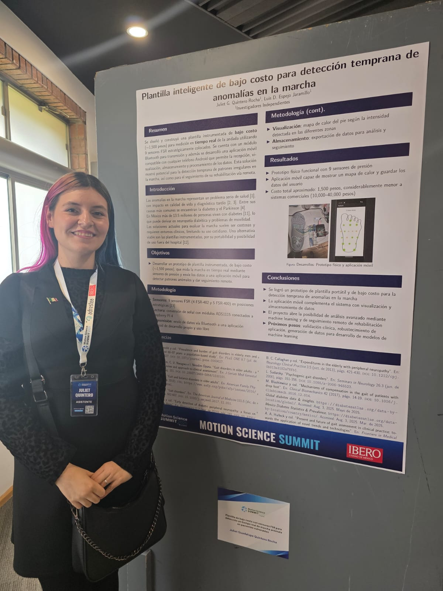
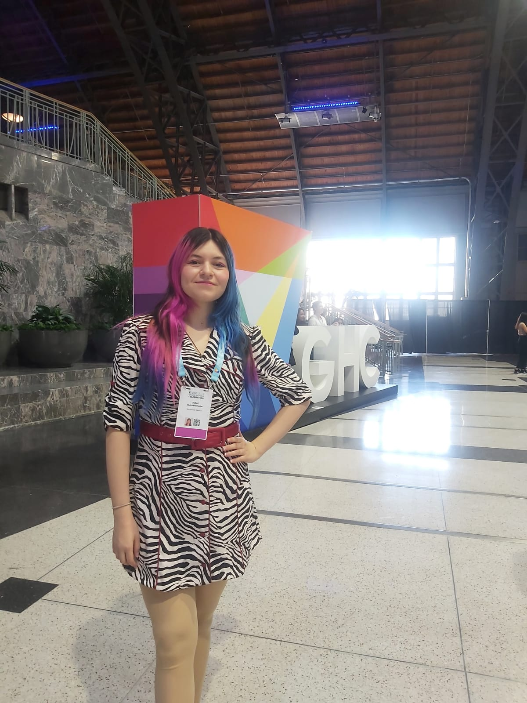
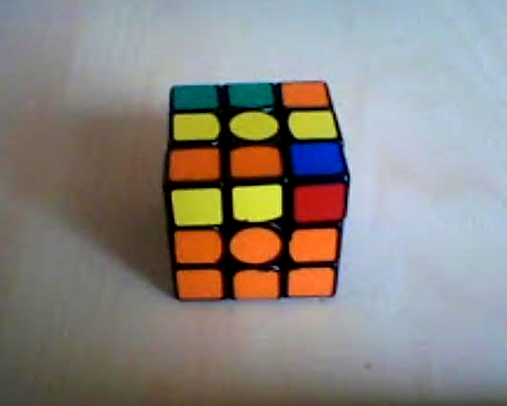
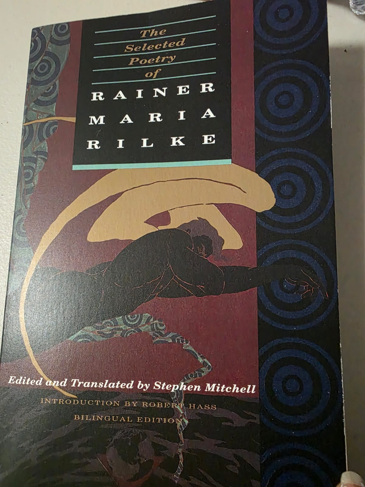
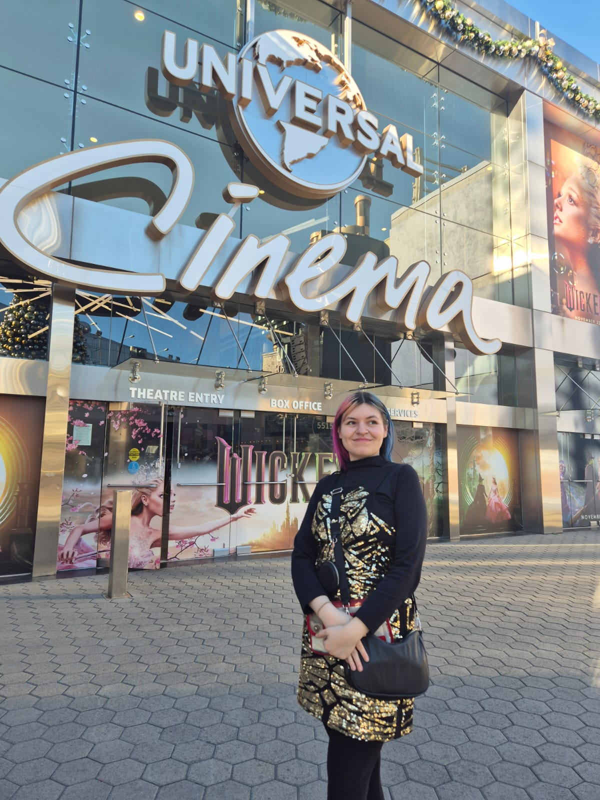
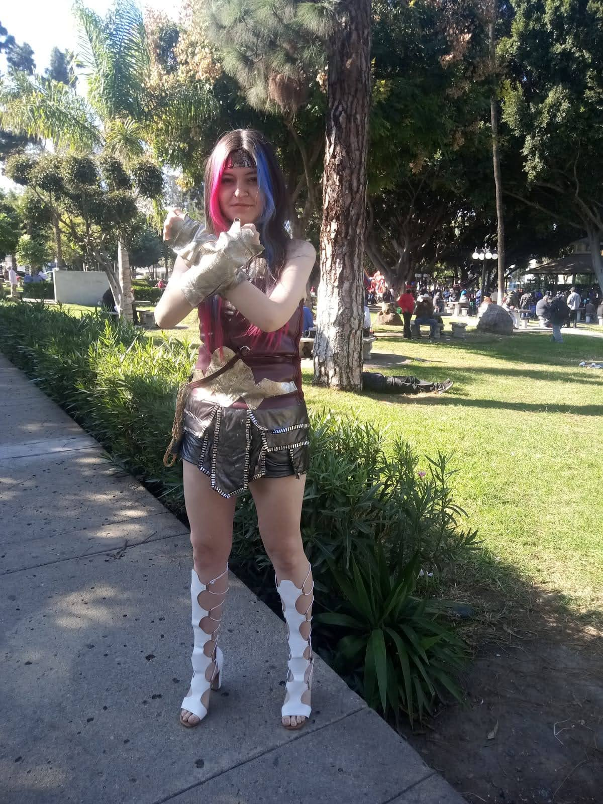
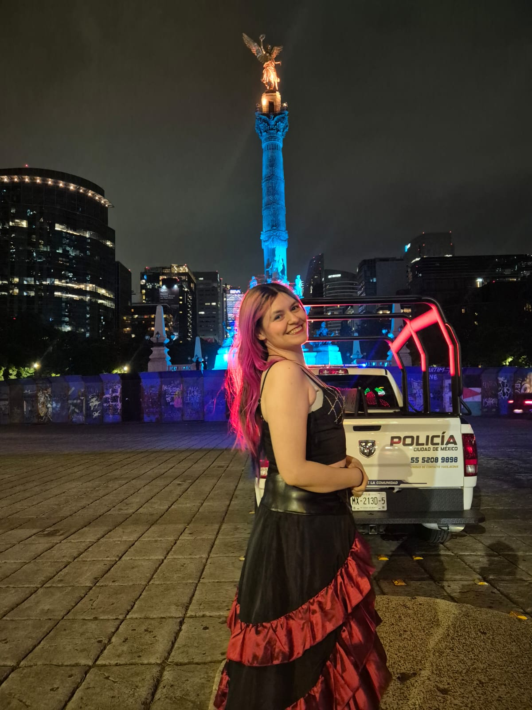
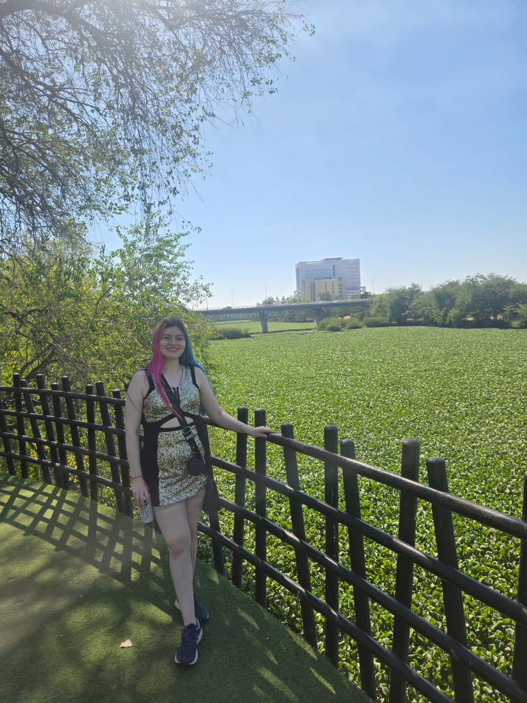
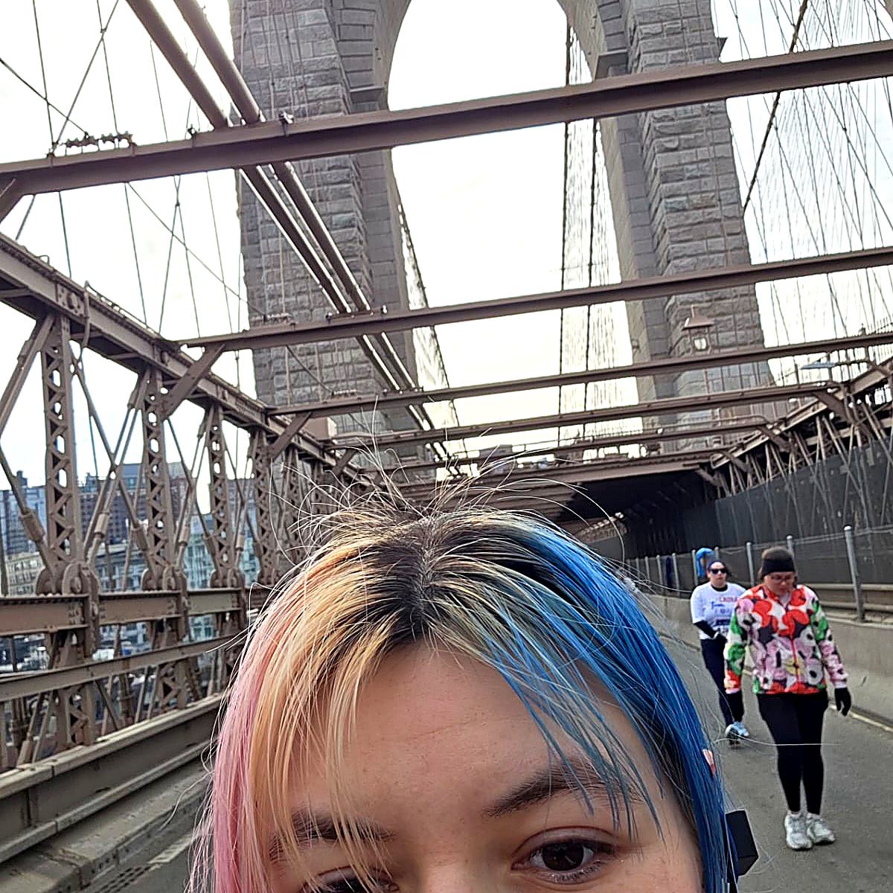
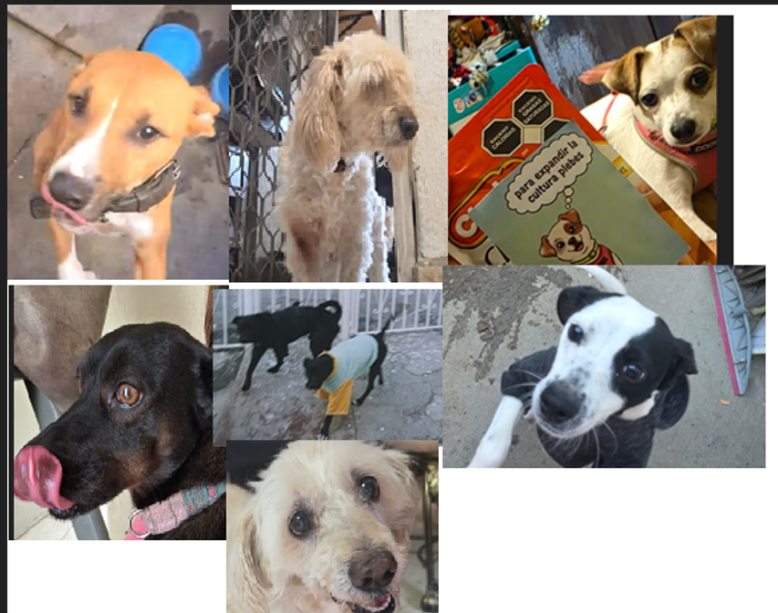

Research Interests
- Design & Implementation of Biomedical Wearables
- Sensor Integration & Embedded Systems
- Health Monitoring & Rehabilitation
Research Projects
- Co-developed a wearable insole prototype using nine force-sensitive resistors positioned based on gait research.
- Integrated voltage dividers, ADC modules, a Raspberry Pi 4, and a custom Android app for real-time pressure visualization and data export. Built a functional prototype for under USD 85.
- Next Steps: Improve sensor reliability, refine the wearable design, and conduct further testing.
Experience
- Contribute to a proprietary full-stack platform managing restaurant technology across 60+ markets on six continents.
- Build and test new features in an Agile team, collaborating with engineers across the U.S., India and Brazil.
Developed and maintained modules for a proprietary executive-facing web application used across 2,000+ branches, enabling efficient access, organization, and analysis of customer information to support credit decisions—impacting services that reach tens of millions of customers.
- Designed and implemented AML and anti-fraud strategy using AI/ML models for 90M+ customers across 25+ countries.
Designed a software concept to optimize real-estate and equipment planning for new plant developments.
Beyond the Lab
A curated view of what shapes how I work: curiosity, communication, design, and perspective.
Curiosity & Computational Thinking

I read daily across science, history, culture, and technology. That habit fuels my research questions and helps me connect ideas across domains.

Programming is a creative outlet for prototyping ideas and turning questions into systems that solve problems.

I find solving a Rubik’s Cube really relaxing, and my personal record is 19 seconds!
Communication & Storytelling

I find it fascinating how people can put emotions and experiences into words in such creative and rhythmic ways.

I enjoy analyzing how framing, sound, and silence shape perception and emotion. I particularly enjoy horror films.
Design & Self-Expression

Clothing is one of my main forms of expression—color, texture, and silhouette are a kind of everyday design language. Small visual choices communicate mood and identity. I also took modeling classes to step outside my comfort zone.
Culture, Identity & Grounding

Mexico City inspires me with its layered history, museums, and neighborhoods—it feels like walking through multiple eras at once.

I'm originally from Sinaloa, but I lived most of my life in Tijuana. I love how music connects different places and cultures, from northern Mexican banda and its polka influences to duranguense, which has a connection to Chicago.

Running clears my mind and builds long-term consistency. I like it because progress comes from patience and iteration.

Dogs make ordinary days better. :)